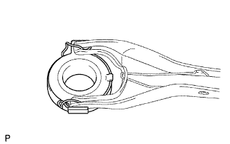
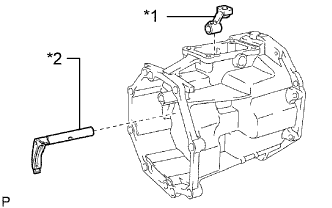
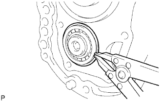
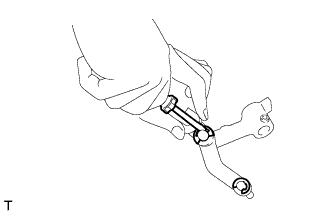
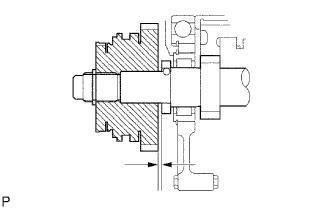

БЛОК МЕХАНИЧЕСКОЙ ТРАНСМИССИИ > РАЗБОРКА |
| 1. REMOVE MANUAL TRANSMISSION FILLER PLUG |
 |
Remove the filler plug and gasket from the manual transmission case.
| 2. REMOVE DRAIN PLUG SUB-ASSEMBLY |
 |
Remove the drain plug and gasket from the manual transmission case.
| 3. REMOVE CLUTCH RELEASE FORK SUB-ASSEMBLY |
 |
Remove the release fork and release bearing from the clutch housing.
| 4. REMOVE CLUTCH RELEASE BEARING ASSEMBLY |
|  |
Remove the clip and release bearing from the release fork.
| 5. REMOVE RELEASE FORK SUPPORT |
Remove the release fork support from the front transmission case.
| 6. REMOVE CLUTCH RELEASE FORK BOOT |
 |
Remove the clutch release fork boot from the front transmission case.
| 7. REMOVE BACK-UP LIGHT SWITCH ASSEMBLY |
 |
Using SST, remove the back-up light switch and gasket from the manual transmission case.
| 8. REMOVE FRONT TRANSMISSION CASE |
 |
Remove the 9 bolts.
 |
Using a plastic-faced hammer, tap off the front transmission case from the manual transmission case.
| 9. REMOVE RESTRICT PIN |
Remove the 2 restrict pins from the transfer adapter.
| 10. REMOVE FLOOR SHIFT CONTROL SHIFT LEVER RETAINER SUB-ASSEMBLY |
Remove the 4 bolts from the transfer adapter.
Remove the gasket from the adapter.
| 11. REMOVE SHIFT DETENT BALL |
 |
Using a T40 "TORX" socket, remove the spring seat from the transfer adapter.
 |
Using a magnet hand, remove the compression spring and shift detent ball from the transfer adapter.
| 12. REMOVE TRANSFER ADAPTER |
Remove the bolt from the shift lever housing.
Remove the 8 bolts.
 |
Using a plastic-faced hammer, tap off the transfer adapter from the manual transmission case.
| 13. REMOVE TRANSMISSION MAGNET |
 |
Remove the magnet from the transfer adapter.
| 14. REMOVE TRANSFER OIL RECEIVER PIPE |
Remove the receiver pipe from the transfer adapter.
| 15. REMOVE SHIFT AND SELECT LEVER |
|  |
Remove the shift and select lever and shift lever housing from the transfer adapter.
| *1 | Shift Lever Housing |
| *2 | Shift and Select Lever |
| 16. REMOVE REVERSE RESTRICT PIN ASSEMBLY |
 |
Using a T40 "TORX" socket, remove the plug from the transfer adapter.
 |
Using a 5 mm pin punch and hammer, tap out the restrict slotted spring pin from the transfer adapter.
Remove the restrict pin from the transfer adapter.
| 17. REMOVE TRANSFER ADAPTER OIL SEAL |
Using a screwdriver and hammer, tap out the oil seal from the transfer adapter.
| 18. REMOVE FRONT BEARING RETAINER |
 |
Remove the 8 bolts.
Remove the bearing retainer and gasket from the transmission case.
| 19. REMOVE TRANSMISSION FRONT BEARING RETAINER OIL SEAL |
Using a screwdriver, pry out the oil seal from the front bearing retainer.
| 20. REMOVE FRONT BEARING SHAFT SNAP RING |
 |
Using a snap ring expander, remove the snap ring from the input shaft front bearing.
| 21. REMOVE NO. 1 COUNTER GEAR FRONT BEARING SNAP RING |
|  |
Using a snap ring expander, remove the snap ring from the counter gear front bearing.
| 22. REMOVE MANUAL TRANSMISSION CASE |
 |
Stand the transmission as shown in the illustration.
Using a plastic-faced hammer, carefully tap off the transmission case as shown in the illustration.
Remove the transmission case from the intermediate plate.
| 23. FIX INTERMEDIATE PLATE |
Fix the intermediate plate in a vise between aluminum plates.
| 24. REMOVE SHIFT DETENT BALL |
 |
Using a T40 "TORX" socket, remove the spring seat and 2 ball plugs from the intermediate plate.
Using a magnet hand, remove the 3 compression springs and 3 shift detent balls from the intermediate plate.
| 25. REMOVE NO. 2 SHIFT DETENT BALL |
 |
Using a T40 "TORX" socket, remove the spring seat from the intermediate plate.
 |
Using a magnet hand, remove the compression spring and No. 2 detent ball from the intermediate plate.
| 26. REMOVE NO. 4 GEAR SHIFT FORK SHAFT |
 |
Remove the bolt from the No. 3 gear shift fork.
Remove the shift detent ball from the reverse shift head.
Remove the No. 4 gear shift fork shaft, shift detent ball and No. 3 gear shift fork from the intermediate plate.
| 27. REMOVE NO. 5 GEAR SHIFT FORK SHAFT |
Using a 5 mm pin punch and a hammer, tap out the slotted spring pin from the reverse shift head
Remove the reverse shift head and No. 5 gear shift fork shaft from the intermediate plate.
| 28. REMOVE NO. 2 SHIFT INTERLOCK PIN |
 |
Using a magnet hand, remove the No. 2 shift interlock pin from the No. 3 gear shift fork shaft.
| 29. REMOVE NO. 3 GEAR SHIFT FORK SHAFT |
 |
Using 2 screwdrivers and a hammer, remove the reverse shift head ring from the No. 3 shift fork shaft.
Using a 5 mm pin punch and a hammer, tap out the slotted spring pin from the No. 3 shift fork shaft.
Remove the No. 3 shift fork shaft from the intermediate plate.
| 30. REMOVE REVERSE SHIFT ARM |
Remove the reverse shift arm from the reverse shift arm bracket.
|  |
Using a screwdriver, remove the reverse shift arm E-ring.
Remove the reverse shift fork from the reverse shift arm.
Using a screwdriver, remove the shift arm shoe E-ring.
Remove the shift arm shoe from the reverse shift arm.
| 31. REMOVE NO. 3 SHIFT INTERLOCK PIN |
Using a magnet hand, remove the No. 3 shift interlock pin from the intermediate.
| 32. REMOVE NO. 2 SHIFT INTERLOCK PIN |
Using a magnet hand, remove the No. 2 shift interlock pin from the No. 1 gear shift fork shaft.
| 33. REMOVE NO. 1 GEAR SHIFT FORK SHAFT |
Using 2 screwdrivers and a hammer, remove the shaft snap ring from the No. 1 gearshift fork shaft.
 |
Remove the bolt from the No. 1 gear shift fork.
 |
Remove the No. 1 gear shift fork shaft from the intermediate plate.
| 34. REMOVE NO. 1 SHIFT INTERLOCK PIN |
 |
Using a magnet hand, remove the shift interlock pin from the intermediate plate.
| 35. REMOVE NO. 2 GEAR SHIFT FORK SHAFT |
Remove the bolt from the No. 2 gear shift fork.
Using 2 screwdrivers and a hammer, remove the shaft snap ring from the No. 2 gear shift fork shaft.
Remove the No. 2 gear shift fork shaft, No. 1 gear shift fork and No. 2 gear shift fork from the intermediate plate.
| 36. INSPECT COUNTER SHAFT 5TH GEAR THRUST CLEARANCE |
|  |
Using a feeler gauge, measure the counter shaft 5th gear thrust clearance.
| 37. REMOVE COUNTER SHAFT 5TH GEAR |
Using 2 screwdrivers and a hammer, tap out the counter gear rear shaft snap ring from the counter gear.
 |
Using SST, remove the No. 5 gear spline and the No. 1 synchronizer ring from the counter gear.
Remove the counter shaft 5th gear and the counter 5th gear bearing from the counter gear.
| 38. REMOVE NO. 3 TRANSMISSION HUB SLEEVE |
 |
Remove the No. 3 transmission hub sleeve, 2 synchromesh shifting key springs, 3 synchromesh shifting keys, counter 5th gear bearing and counter shaft 5th gear.
| *1 | No. 3 Transmission Hub Sleeve |
| *2 | No. 3 Synchromesh Shifting Key Spring |
| *3 | Counter 5th Gear Bearing |
| *4 | No. 3 Synchromesh Shifting Key |
| *5 | Counter Shaft 5th Gear |
| 39. REMOVE 5TH GEAR THRUST WASHER |
Remove the 5th gear thrust washer from the counter gear.
| 40. REMOVE 5TH GEAR BEARING INNER RACE LOCK BALL |
Using a magnet hand, remove the 5th gear bearing inner race lock ball from the counter gear.
| 41. REMOVE REVERSE SHIFT ARM BRACKET |
Remove the 2 bolts and reverse shift arm bracket from the intermediate plate.
| 42. REMOVE REVERSE IDLER GEAR SUB-ASSEMBLY |
Remove the bolt and reverse idler gear shaft stopper from the intermediate plate.
Remove the reverse idler gear shaft and the reverse idler gear from the intermediate plate.
| 43. INSPECT REVERSE IDLER GEAR RADIAL CLEARANCE |
Using a dial indicator, measure the reverse idler gear radial clearance.
| 44. INSPECT REVERSE IDLER GEAR SUB-ASSEMBLY |
Using a feeler gauge, measure the clearance between the reverse idler gear and the shift arm shoe.
| 45. REMOVE OUTPUT SHAFT REAR BEARING RETAINER |
Using a T40 "TORX" socket wrench, remove the 4 screws and output shaft rear bearing retainer from the intermediate plate.
| 46. REMOVE COUNTER GEAR ASSEMBLY |
Using a snap ring expander, remove the counter shaft center bearing snap ring from the counter shaft center bearing.
Using SST, remove the counter shaft center bearing and counter gear from the intermediate plate.
| 47. REMOVE INPUT SHAFT ASSEMBLY |
Remove the input shaft with the 13 input shaft bearings and No. 2 synchronizer ring from the output shaft.
| 48. REMOVE OUTPUT SHAFT ASSEMBLY |
Using a snap ring expander, remove the output shaft bearing shaft snap ring from the output shaft bearing.
Remove the output shaft from the intermediate plate by pulling on the output shaft and tapping on the intermediate plate with a plastic-faced hammer.